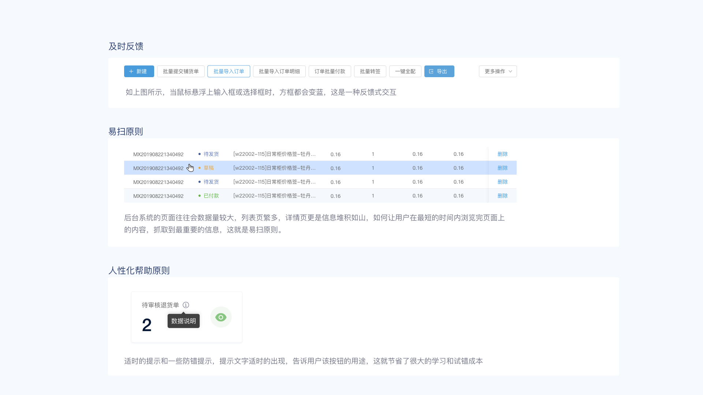
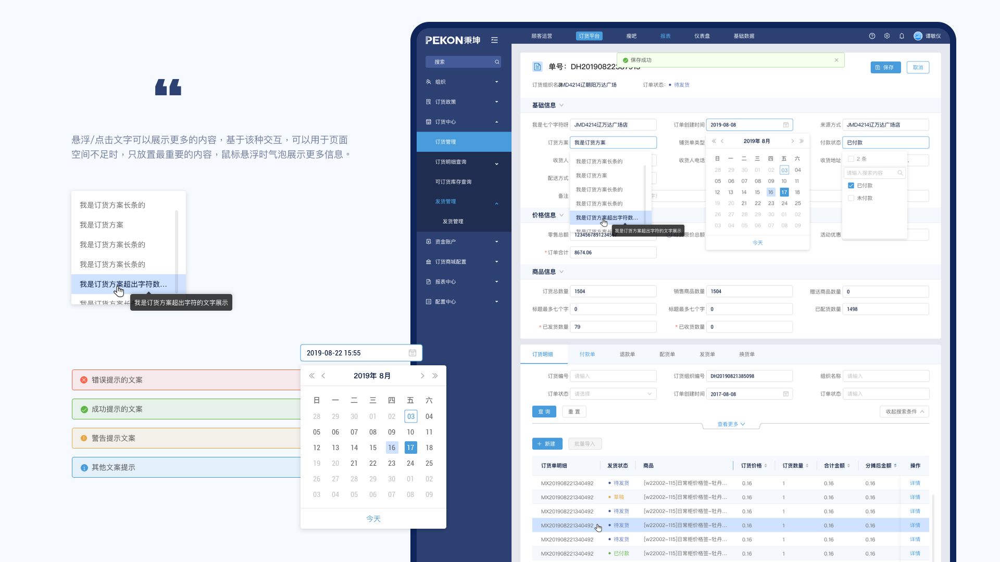
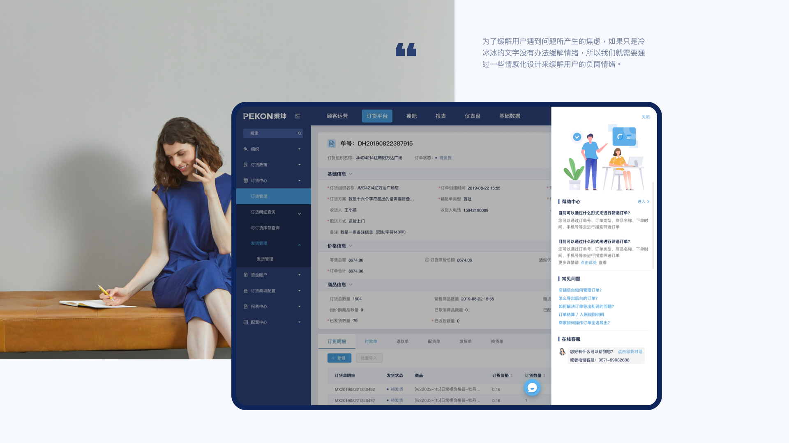

ERP 是针对物资资源管理（物流）、人力资源管理（人流）、财务资源管理（财流）、信息资源管理（信息流）集成一体化的企业管理软件。它将包含客户/服务架构，使用图形用户接口，应用开放系统制作。

从前期调研到后期输出，围绕模块梳理、规范整理与控件系统，建立可复用的 B 端设计语言。

后台数据密集、页面繁多，通过反馈、易扫与人性化帮助，降低学习与试错成本。
如上图所示，当鼠标悬浮上输入框或选择框时，方框都会变蓝，这是一种反馈式交互。
后台系统的页面往往数据量较大，列表页繁多，详情页更是信息堆积如山。如何让用户在最短的时间内浏览完页面上的内容、抓取到最重要的信息，这就是易扫原则。
适时的提示和一些防错提示，提示文字适时的出现，告诉用户该按钮的用途，这就节省了很大的学习和试错成本。

专业、效率与一致性——复杂 B 端首先要看得懂、用得顺、长得统。
合理安排信息布局，优化字段与页面元素，加入功能引导——让用户快速理解「这是什么」与「能做什么」。
减少不必要的操作与页面跳转，减少专业术语，提供帮助性提示。
同一用语、功能与操作保持一致，降低学习成本，确立统一的品牌形象。

经营看板、订货详情与表单校验——覆盖后台最常见的三类界面形态。
顶部聚合本月订货额、回款、订单量与未发货量；中部趋势图切换销售额 / 回款 / 订单量，右侧门店排名辅助发现异常。左侧深色导航固定模块入口。

↑ 看板区支持按时间维度切换图表
Web 列表中基础的表格样式，用于业务相关的各项数据的平铺展示，通常操作按钮置于表格最右侧。横向基础表格的纵列数据过多时提供滑条，而页面大量的数据项容易造成用户的视觉疲劳，提供筛选固定页面提高用户操作的易用性。

↑ 宽表横向滚动，行内操作与确认弹窗
给予用户正确的引导，针对用户输入给出反馈，输入正确还是错误。当页面空间不足时，使用悬浮文字提示的交互方式，例如鼠标悬浮在「!」上展开文字说明。

↑ 校验反馈与悬浮说明示意

悬浮或点击文字可展示更多内容，基于此交互上它可以在页面空间不足时，出现内容只放上最重要的。鼠标悬浮时气泡展示更多信息。同时整理错误、成功、警告与其他消息条样式，以及日期选择器等高频控件。
按基础组件、导航、数据录入、数据展示与操作反馈分类整理，方便设计与开发对齐。

按钮、图标、菜单、Tab、面包屑、输入框、选择器、表格、图表、弹窗与 Toast 等基础控件，减少后续页面「各做各的」。
为了缓解用户遇到问题所产生的焦虑，通过情感化设计来缓解负面情绪——而不只是冷冰冰的文字。

侧边帮助面板搭配插画与引导入口，提供筛选订单的操作指南、常见问题列表，以及在线客服对话入口——让遇到问题时有「被接住」的感觉。
做对了什么：先梳理模块与主链路，再统一表格、表单与提示组件；看板、列表、详情三类页面风格一致，反馈与帮助机制降低了培训成本。
如果重来：会更早输出组件示例页并走查复杂表单；宽表场景也会多预留一版「精简列」视图，方便小屏使用。
收获：系统做了 B 端后台界面，对高密度信息排版、状态表达与组件化协作有了更具体的体会，也为后续企业与平台类产品打下基础。